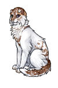
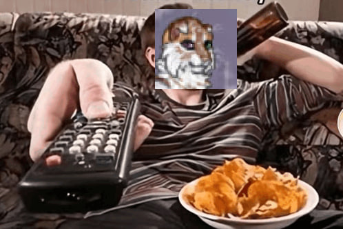
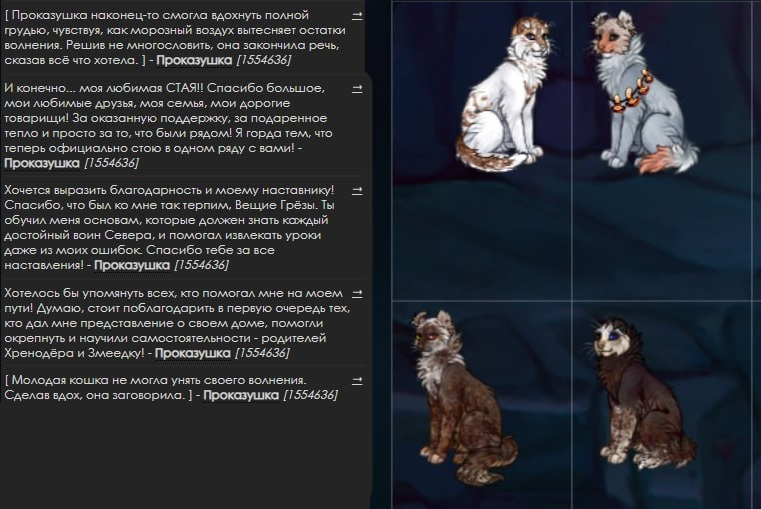
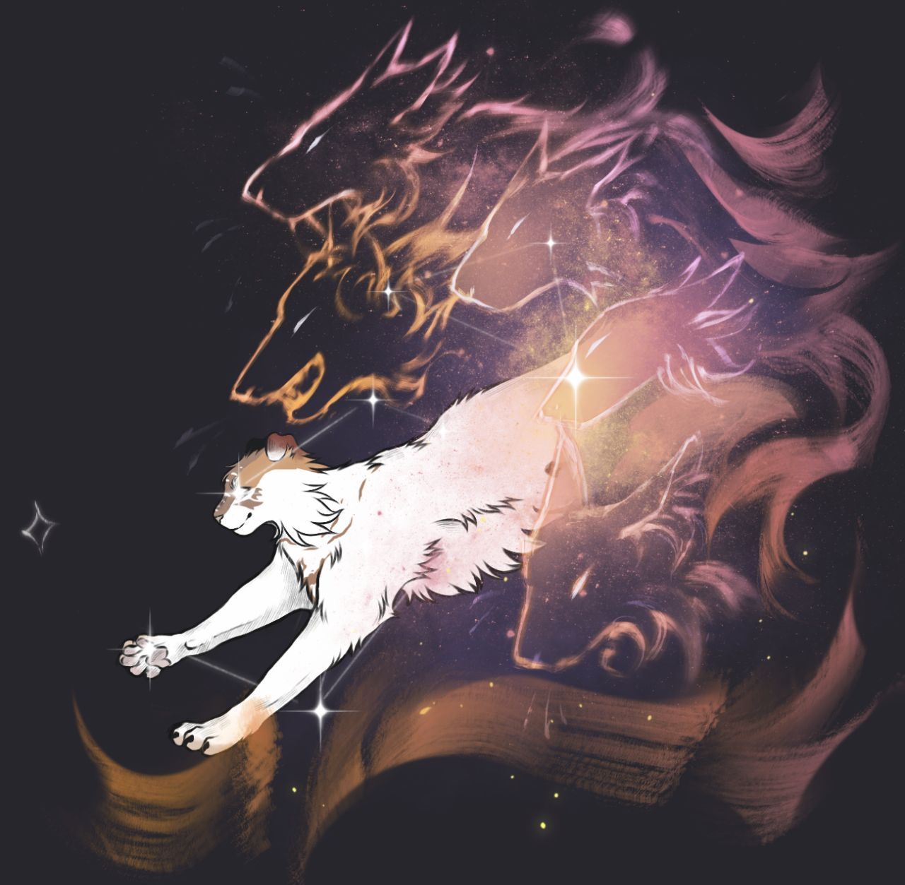
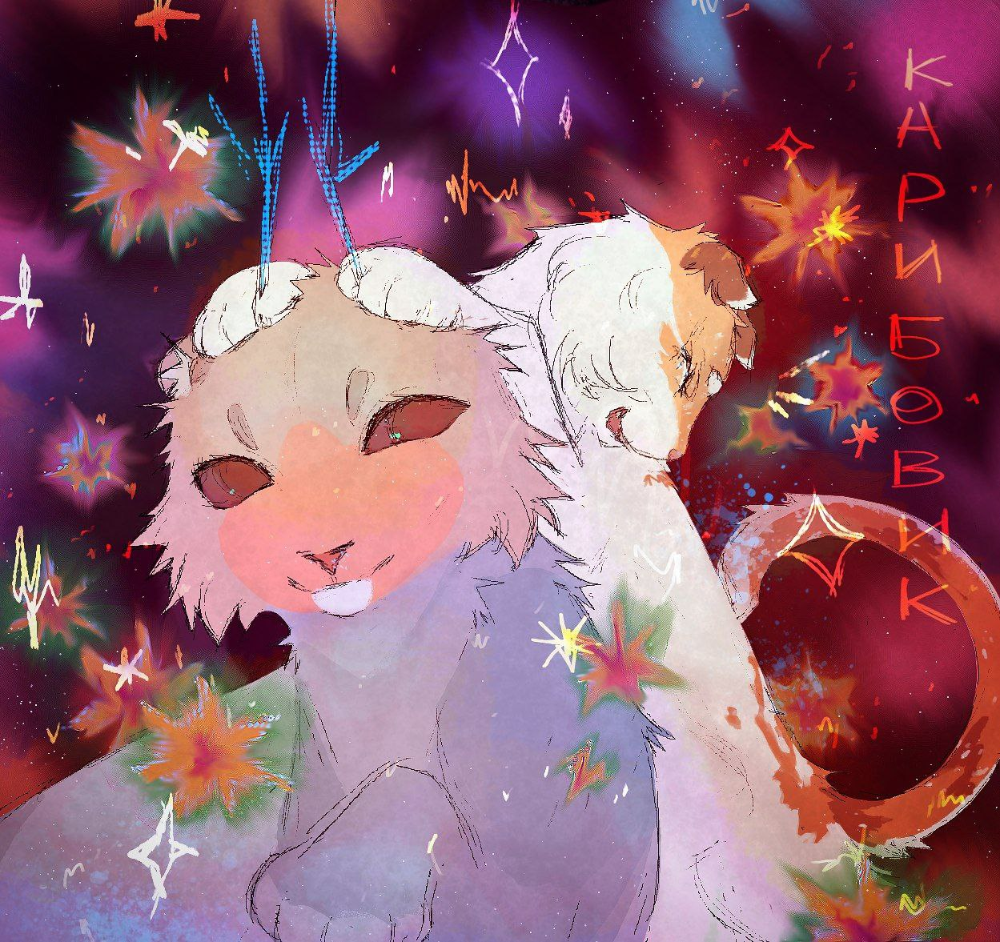
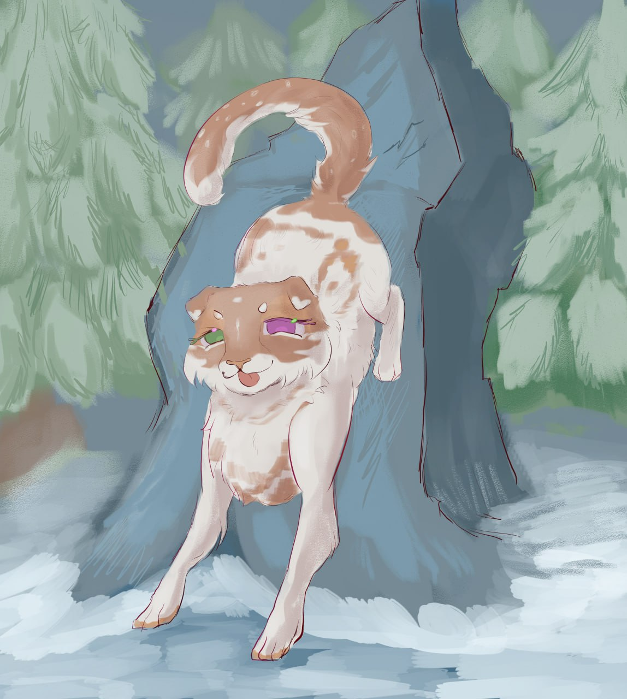
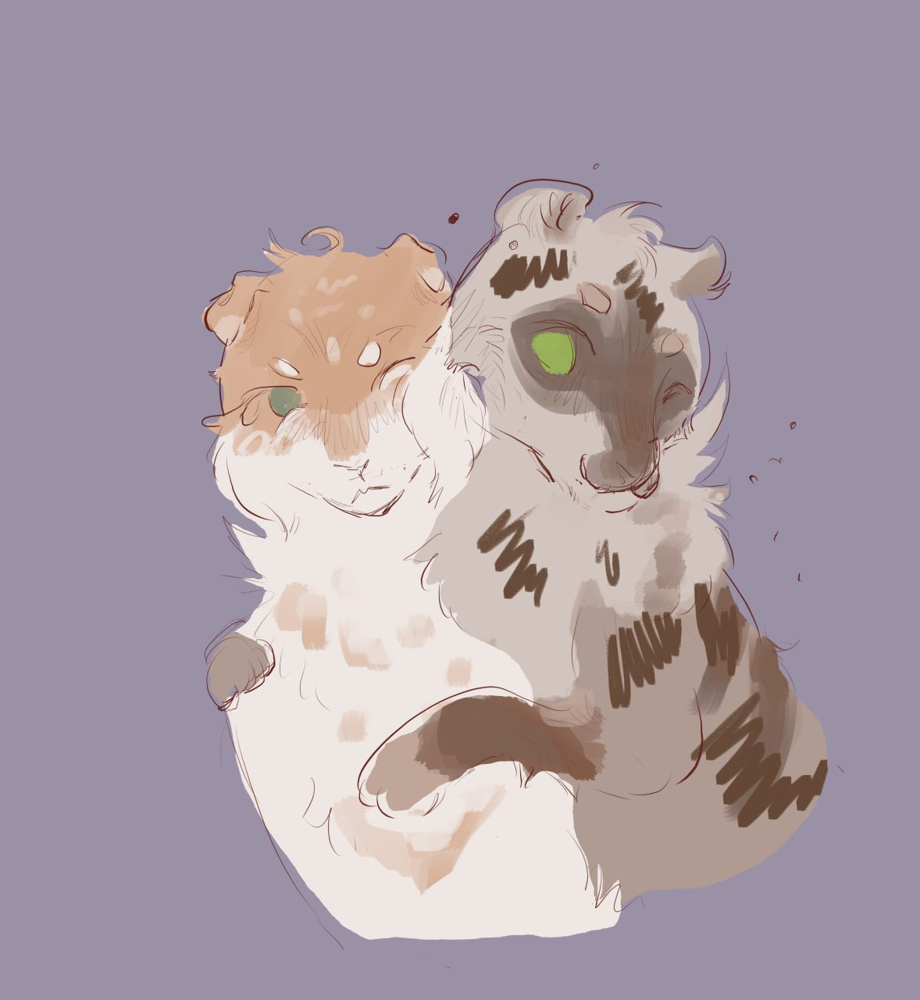
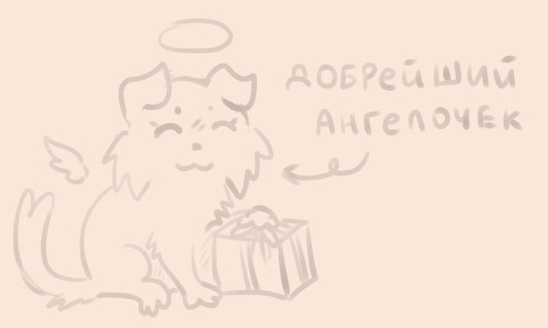

Проделка


вот вы думаете вы чистый да так вот вам кажеца вы просто не видели сюсечку
все ваши предубеждения о чистоте будут размылены в пух и прах (и мыльные пузыри) потомушто ето САМАя чистая кошка. вы ходите по лагерю. вы мараете лапы. вы не замечаете. вы засыпаете. что утром?. ВАСПОМЫЛИ. вы етого хотели?. очевидно что да разве вы сможете отказат етой милейшей мордашечке.
ᛁᚾᛞᛖᛈᛖᚾᛞᛖᚾᚲᛖ
независимость
не просто мордашечке етой белейшей шерсточке прекрасной етим милым глазам етим пянышкам цвета лепесточкоф сакуры
она как нежнеькая птичко пуночка вы просто слышите как ето слово звучит... пуночка... звучит как шелест листьев и нежный бризз вам почесали мозг сделали асмр вы в восторге.. пуночк... сюсечк...
но все же если вы думаете што черти в тихом омуте не водяца.. вы ошибаетес... представьте себя на месте ее супруга, пучеглазика... вы возвращаетес домой... а там сюсечко лежит на диване с пивасиком и чипсами... вы тоже в шоке? а она смотрит чистку ковроф ой улыбочки** ето мастерский уровен баланса чистоты и скуфярства. наличие ворлд оф танкс на персоналном компьютере езе уточняеца

* * *
Угораздило же меня сегодня ближе к ночи пойти в обход. Нет, конечно, в лунную ночь северные земли очень красивы, не спорю. Я себе все лапы отморозила!! Ладно, дело даже не в этом.
Возвращаюсь я в лагерь и вижу два светящихся глаза в темноте. И смотрят прямо на меня!!! Ну и первая же мысль, кто это? Сова? Филин? Черт её знает!!!
Только Огни знают, почему меня повело в эту нору……Хотя на моем месте, наверное, каждый так отреагировал. Я любому филину на один зуб…ээээ…..клюв!! Была Проказушка, и нет Проказушки!!
Ещё оказалось хуже, что это была вовсе не сова, в Расчудеснушка! И конечно же, она всё видела…. Как хорошо, что у меня была возможность научиться красноречию, как у матери и спасти ситуацию вместе с моей репутацией…. Надеюсь, Рассчудеснушка поверила…
Ну она ведь правда похожа на сову!!
* * *
Вот сидит он, значит, и смотрит. Опять.
Я же не глупая, я прекрасно всё понимаю. Но, Огни, неужели так сложно хотя бы хвостом вильнуть или ухом повести в знак того, что я не с пустотой разговариваю? Иногда мне кажется, что я практикуюсь в красноречии перед камнем, который каким-то чудом обзавелся шерстью и этими своими пучеглазыми...глазищами.
Хотя может в прошлые разы я всё-таки переборщила со своими рассказами….Он просто уснул!! Я как раз делилась с ним той самой историей с Расчудеснушкой. Я знаю, что он отлично хранит секреты и точно никому не расскажет (интересно почему…..)))0)) ). И что он сделал? Ни-че-го. Просто моргнул. Один раз. Очень медленно.
Ладно, проехали.
Мне интересно, всегда ли я верно интерпритирую то, что он пытается донести… Недавно были очень хорошо видны Великие Огни на небе. Но деревья закрывали весь взор. И я предложила Пучеглазику залезть на верхушку ели, чтобы получше рассмотреть. Ну и что, что ветки были замёрзшие?? Не такие уж мы и тяжелые. Так или иначе, мы все таки пошли, точнее, я его потащила с собой. Судя по тому, как он дергался, он явно был воодушевлен…….или же он просто вырывался? Ну, по крайней мере, он ничего против не сказал))))0
* * *
С недавних пор меня часто начали посещать странные мысли. На подобии, может ли дружба длиться дольше, чем одна жизнь? Возможно ли существование жизни после смерти? Какова допустимая вероятность вычистить всех блох у Улыбочк- Тьфу! Раздражает!! Им нет ни конца, ни края. Лучше бы делом занялась.
Проказушка досадно фыркнула, уставившись на отражение луны в воде.
Что ж, быть может, у Стаи всё именно так? Если верить Звёздной Волчице, мы со Стаей прожили бок о бок ни одну жизнь, и вероятно, проживём ещё не последнюю? Конечно, как бы я ни старалась, ничего из своих прошлых «я» у меня не выходит вспомнить. Но мне очень хочется верить, что всё так и есть….
Но как быть с теми, кто не был связан узами с Волчицей? Неужели, их именам навсегда суждено кануть в небытие?
Уфф, почему я вообще думаю об этом?? Я всё равно ничего не помню. РА-ЗДРА-ЖА-ЕТ!!!
* * *
Многие считают странным то, что со своей любовью к чистоте, я подбираю с территории Севера всякий ненужный “мусор”. А вовсе это и не мусор! Я привыкла считать, что всему можно найти своё применение.
К тому же из этого “мусора” можно смастерить красивые вещи. Тем более, я ведь не устраиваю стихийные свалки из всего, что найду. Для меня настоящее хобби сортировать весь свой “улов” по разным критериям. Размер, цвет, форма…Это расслабляет.
* * *

Галерея


@pucheglazik


грязно по принуждению сматреть анлайн
@ulybashka
